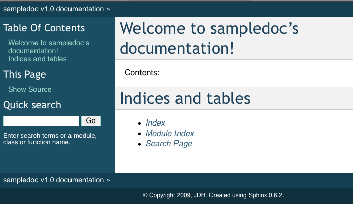

If you now point your browser to _build/html/index.html, you should see a basic sphinx site.
In [69]: lines = plot([1,2,3])
In [70]: setp(lines)
alpha: float
animated: [True | False]
antialiased or aa: [True | False]
...snip
Here is a quick and dirty cheat sheet for some common stuff you want to do in sphinx and ReST. You can see the literal source for this file at.
You use inline markup to make text italics, bold, or monotype.
You can represent code blocks fairly easily:
import numpy as np
x = np.random.rand(12)
Or literally include code:
It is easy to make lists in rest
This shows you how to make a table – if you only want to make a list see Making a list.
| Name | Age |
|---|---|
| John D Hunter | 40 |
| Cast of Thousands | 41 |
| And Still More | 42 |
It is easy to make a link to yahoo or to some section inside this document (see Making a table) or another document.
You can also reference classes, modules, functions, etc that are documented using the sphinx autodoc facilites. For example, see the module models_functions documentation, or the class Account, or the method convert_units().
Returns datetime of first day of most frequently occurring month in a given time series spanning 25-35 days to use as basis for Period.
Given utility types and units, returns the scaling factor used to convert the old units to the new units. Domestic water type basis is ‘gpm,gal’; all others are assumed energy with basis ‘kBtuh,kBtu’. Units options are those available to Meter models.
Given the type, units and mm/yyyy month strings and a list of Meters, function retrieves dataframes, converts units for Billing Demand, Peak Demand, and Consumption, then sums Peak Demand, Consumption, Cost, kBtu Consumption, kBtuh Peak Demand, and CDD/HDD (consumption and demand).
Domestic water meters are excluded from all conversions and summations other than Cost.
Returns math.isnan(float(x)). (isnan fails on Decimal inputs)
Given the utility type, returns the default units for that type.
Takes dataframe, dict of column names and functions to apply to those columns, a name for the index column, and a boolean indicating whether the df should be transposed prior to converting into a list of lists.
function(df,col_0,index_func,column_list[,column_dict]) df = DataFrame with monthly period index col_0 = [name_for_column_0,value_for_column_0] index_func = function to apply to index column_list = list of column names in df and
in column_dict’s keys that should be included as columns in output table
Returns a list of lists, with first column per col_0 list, monthly index in second column after applying index_func, and remaining columns as listed in column_list. Columns pulled from df expected to be Decimals and are converted to floats for output table.
Takes dataframe and a list of column names to include in the output. Index put in first column as Month with isoformat.
make pandas DataFrame from a list of series and optional list of series names
Returns Decimal(0) if math.isnan(x) is True, otherwise returns x.